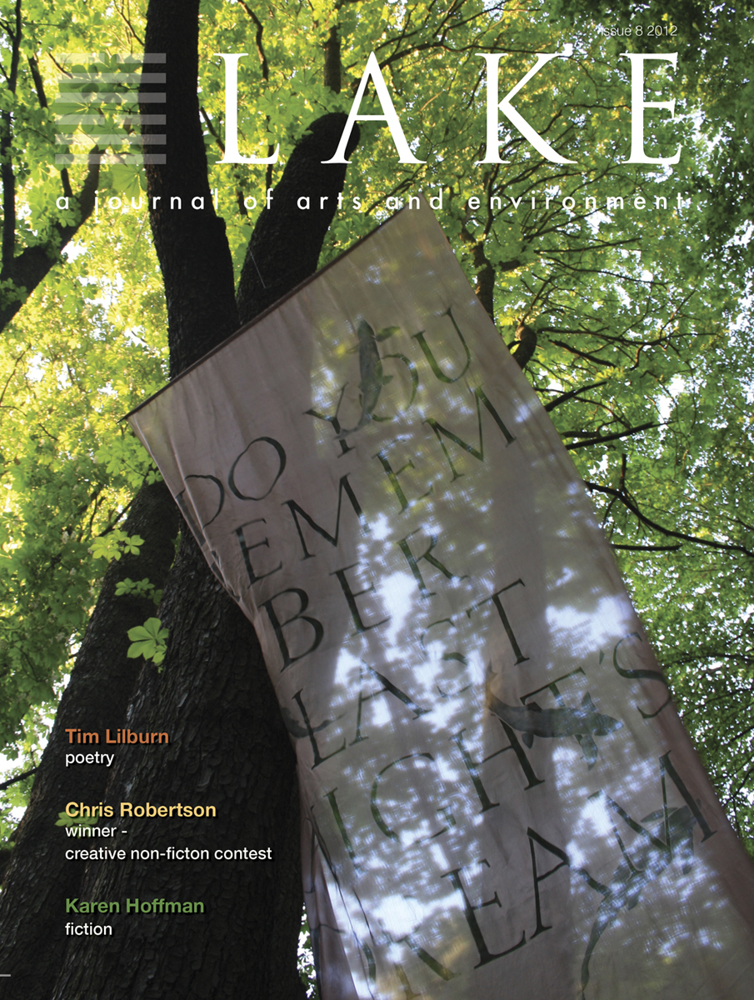

|

Issue #8 Will Feature Lake's Creative Non-fiction Contest winner Christina Robertson's essay "What Lodges in the Heart." Congratulations to our winner and thanks again to all who entered!
The topic of the contest was "Places That Shape Us."
|
LAKE ISSUE 8 PUBLISHED- LAST PRINT ISSUE
Look for a re-launch of LAKE in 2014
Announcing LAKE issue 8!
Featuring art by Tanja Leonhardt, Akiko Taniguchi, Larry Merriman, and Brian Cullen.
Featuring poetry by Tim Lilburn, Emily Nilsen, Portia Priegert, Christine Lowther, Carolyn "Hoople" Creed, Jeremy Nathan Marks, and Salvatore Difalco.
Featuring
prose by Karen Hofmann, Hedy Heppenstall, and Emily McGiffin.
Including the contest winning creative non-fiction piece
Chris Robertson, "What Lodges in the Heart."
View all past and current issues
|